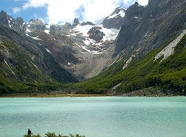
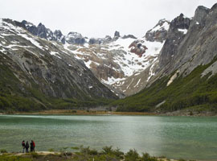
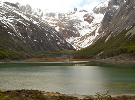

Turbera de altura y margen del Río Esmeralda
A diferencia de la turbera anterior, presenta especies de la flora típicas de ambientes con condiciones más severas. Al acercarse al río, se suceden cascadas y rápidos, alternando con tramos de planicies donde el curso de agua se presenta formando meandros. El último ascenso conduce a la meta: la laguna Esmeralda, emplazada a 411 metros sobre el nivel del mar.
  